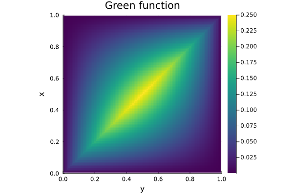
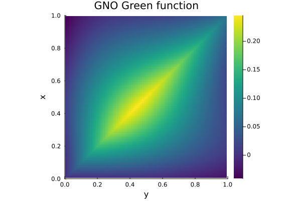
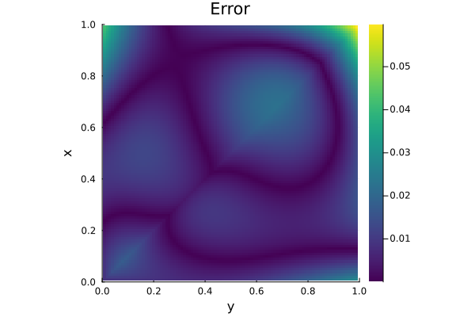
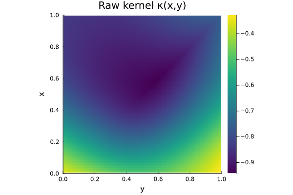

Tutorial: does a kernel neural operator learn the Green function?
The kernel neural operators of Kovachki et al. (Neural Operator: Learning Maps Between Function Spaces, 2021) are built around integral layers
\[(K v)(x) = \int_\Omega \kappa_\theta(x,y)\,v(y)\,\mathrm dy .\]
The motivation for this choice is that the solution operator of a linear PDE has exactly this form: if $-\Delta u = f$ with homogeneous boundary conditions, then
\[u(x) = \int_\Omega G(x,y)\,f(y)\,\mathrm dy ,\]
with $G$ the Green function of the problem. A single integral layer can therefore represent the solution operator exactly, with $\kappa_\theta = G$.
This tutorial checks that claim numerically. It trains a graph neural operator (GNO) on a 1D Poisson problem whose Green function is known in closed form, extracts the operator's discrete Green function from the trained network, and compares the two. It assumes you have read the Poisson tutorial.
The code below is shown but not run when the documentation is built: training takes several minutes, and the plots need Plots.jl. The figures were produced by running it as a script.
using DrWatson
using Gridap
using GridapROMs
using GridapROMs.RBSteady
using NonlinearROMs
using Plots
using LinearAlgebra1. The problem and its Green function
We solve $-u'' = f$ on $(0,1)$ with $u(0) = u(1) = 0$. Its Green function is
\[G(x,y) = \min(x,y) - xy = \frac{x + y - |x - y|}{2} - xy ,\]
a tent along the diagonal, with a kink at $x = y$.
green(x,y) = (x + y - abs(x - y)) / 2 - x*y2. Forcings that identify $G$
The data must be rich enough to pin $G$ down. With a single forcing shape, e.g. a constant $f$, the snapshots only determine $\int_\Omega \kappa(x,y)\,\mathrm dy$: infinitely many kernels fit the data equally well. The forcings are therefore random combinations of the first nmodes sine modes,
\[f(\mu)(x) = \sum_{k=1}^{n_{\text{modes}}} \mu_k \sin(k\pi x), \qquad \mu \in [-1,1]^{n_{\text{modes}}} ,\]
which determine $G$ up to the highest frequency they contain.
nmodes = 8
pdomain = ntuple(i -> isodd(i) ? -1 : 1,2*nmodes)
pspace = ParamSpace(pdomain)
domain = (0,1)
h = 1/100
partition = (round(Int,1/h),)
model = CartesianDiscreteModel(domain,partition)
order = 1
degree = 2*order
Ω = Triangulation(model)
dΩ = Measure(Ω,degree)
f(μ) = x -> sum(μ[k]*sin(k*π*x[1]) for k in 1:nmodes)
fμ(μ) = parameterise(f,μ)
g(μ) = x -> 0.0
gμ(μ) = parameterise(g,μ)
stiffness(μ,u,v) = ∫(∇(v)⋅∇(u))dΩ
rhs(μ,v) = ∫(fμ(μ)*v)dΩ
reffe = ReferenceFE(lagrangian,Float64,order)
test = TestFESpace(Ω,reffe;conformity=:H1,dirichlet_tags=[1,2])
trial = ParamTrialFESpace(test,gμ)
feop = LinearParamFEOperator(rhs,stiffness,pspace,trial,test)
fesolver = LinearFESolver(LUSolver())3. Snapshots
μ_train = realisation(pspace;nparams=50)
uhμ_train = solve(fesolver,feop,μ_train)
μ = realisation(pspace;nparams=1)
uhμ = solve(fesolver,feop,μ)4. A GNO that can represent $G$
Three choices make the network able to represent the solution operator exactly, and make its Green function easy to read off afterwards.
- A complete graph. $G$ is non-local: every $f(y)$ influences every $u(x)$. A
GraphInducedSpacewithradius=1.0, the diameter of $\Omega$, connects every pair of points. - Identity activations. With
activation=identitythe lift, the kernel layer and the projection are all affine in $f$, so the whole network is an affine map of $f$, just like the exact solution operator. - $\kappa = \kappa(x,y)$.
DataFormatter(;pass_features=Val(false))feeds the kernel network the coordinates only, never $f$. This is Kovachki et al.'s $\kappa(x,y)$ case. Since $\kappa_\theta$ never sees $f$, it can have its own nonlinearity (kernel_activation=tanh) without breaking the affinity in $f$. The nonlinearity is needed, because an affine $\kappa_\theta$ cannot reproduce the kink of $G$ at $x = y$.
x = get_coords(test)
features(μ) = FeatureBundle((fμ(μ),))
input_space(μ) = InputSpace(x,features(μ))
output_space = OutputSpace(uhμ_train)
gspace = GraphInducedSpace(test;radius=1.0)
gmodel = KernelNeuralModel(
gspace;
hidden_layers=(64,64),
activation=identity,
kernel_activation=tanh,
formatter=DataFormatter(;pass_features=Val(false))
)
solver = NeuralSolver(gmodel;epochs=1000,print_every=100)
op = neural_operator(solver,input_space(μ_train),output_space)
pred_uμ = solve(solver,op,input_space(μ))
uμ = OutputSpace(uhμ).values
println("relative test error: $(norm(pred_uμ - uμ) / norm(uμ))")5. The network's discrete Green function
Since the network is affine in $f$, its Green function can be measured directly. Feed it the nodal forcing $e_j$, which is 1 at node $j$ and 0 elsewhere, and subtract the response to $f = 0$ to remove the affine offset. The result is column $j$ of the discrete operator. Dividing by the nodal quadrature weight $h$ turns it into an approximation of $G(\cdot,x_j)$. All $N$ forcings, plus the zero forcing, are evaluated as one batch of $N+1$ samples.
Only the integral part of the network is evaluated. A KernelNeuralLayer computes $W v(x) + b + (K v)(x)$, and its local term $W v(x)$ only couples $f(x_j)$ to $u(x_j)$. That term would appear as a spike on the diagonal, growing like $1/h$, and it is not part of any Green function. The code therefore applies the lift, then the kernel $K$ alone, then the projection.
N = length(x)
xs = map(xi -> xi.data[1],x)
coords = repeat(reshape(Float32.(xs),1,N,1),1,1,N+1)
forcings = zeros(Float32,1,N,N+1)
for j in 1:N
forcings[1,j,j+1] = one(Float32)
end
inputs = (coords=coords,features=forcings)
normalise!(inputs,op.stats)
fixed_data = NonlinearROMs.merge_data(solver,inputs)
lift_layer = op.chain.layers.layer_1
(_,v), = lift_layer(fixed_data,op.parameters.layer_1,op.states.layer_1)
kernel_layer = op.chain.layers.layer_2.kernel
(_,kout), = kernel_layer((fixed_data,v),op.parameters.layer_2.kernel,op.states.layer_2.kernel)
project_layer = op.chain.layers.layer_3.layer
responses_2d, = project_layer(reshape(kout,size(kout,1),:),op.parameters.layer_3,op.states.layer_3)
responses = reshape(responses_2d,size(responses_2d,1),size(kout)[2:end]...)
denormalise!(responses,op.stats)
approx_values = (responses[1,:,2:end] .- responses[1,:,1]) ./ h
values = [green(xi,xj) for xi in xs, xj in xs]
println("relative Green function error: $(norm(approx_values - values) / norm(values))")6. The raw kernel $\kappa_\theta(x,y)$
The kernel network itself can be evaluated on every pair $(x,y)$. On a complete graph every pair is an edge, so we can build the kernel's input as PlainMP does: the source coordinate $y$, the destination coordinate $x$, and the edge weight $|x-y|$, normalised by the domain's diameter exactly as in GraphInducedSpace's constructor.
x̃s = vec(inputs.coords[1,:,1])
kernel_ps = op.parameters.layer_2.kernel
kernel_st = op.states.layer_2.kernel
wmax = maximum(xs) - minimum(xs)
pairs = zeros(Float32,3,N*N,1)
for (k,(i,j)) in enumerate(Iterators.product(1:N,1:N))
pairs[1,k,1] = x̃s[j] # source (y)
pairs[2,k,1] = x̃s[i] # destination (x)
pairs[3,k,1] = abs(xs[i] - xs[j]) / wmax # edge weight
end
κ, = kernel_layer.kernel(pairs,kernel_ps,kernel_st)
kernel_values = reshape(κ[1,:,1],N,N)7. Plots
dir = datadir("green")
mkpath(dir)
hmap(vals,title) = heatmap(xs,xs,vals;
aspect_ratio=:equal,xlims=(0,1),ylims=(0,1),color=:viridis,
title,xlabel="y",ylabel="x"
)
savefig(hmap(values,"Green function"),joinpath(dir,"green.png"))
savefig(hmap(approx_values,"GNO Green function"),joinpath(dir,"green_gno.png"))
savefig(hmap(abs.(approx_values - values),"Error"),joinpath(dir,"green_error.png"))
savefig(hmap(kernel_values,"Raw kernel κ(x,y)"),joinpath(dir,"kernel.png"))8. Results
The exact Green function, a tent along the diagonal peaking at $G(1/2,1/2) = 1/4$:

The Green function of the trained GNO, measured as in §5:

The network recovers the structure of $G$: the peak of about 0.24 near the centre, the ridge along $x = y$, and the decay to zero at the boundaries. The pointwise error stays below about 0.06, against a maximum of 0.25 for $G$:

The error is largest in the corners $(0,1)$ and $(1,0)$, and near $(1,1)$. There $G$ vanishes, so any offset in the learned operator is fully visible. The curved, low-error bands are characteristic of fitting with a few sine modes: the forcings only constrain $G$ up to the frequencies they contain, and the rest of the error oscillates accordingly.
Finally, the raw kernel $\kappa_\theta(x,y)$:

This is not $G$ itself, and should not be compared with it value by value. The network computes $Q\,K\,P$, with $P$ the lift and $Q$ the projection. $\kappa_\theta$ is the matrix-valued kernel between the hidden channels, and the plot shows only its first entry. On top of that, $\kappa_\theta$ acts on normalised data. Any combination of rescalings and sign changes absorbed by $P$ and $Q$ gives the same operator. What the operator actually computes is the composition, which is what §5 measures. Even so, the raw kernel reflects the structure of $G$: it is extremal along the diagonal (here a minimum, the sign being absorbed by $P$ and $Q$), and varies smoothly away from it.
This page was generated using Literate.jl.